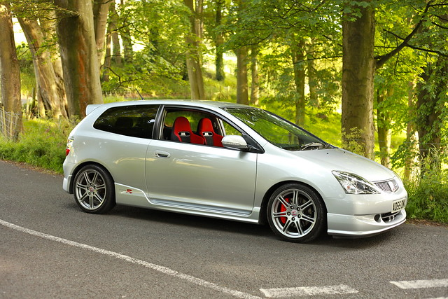
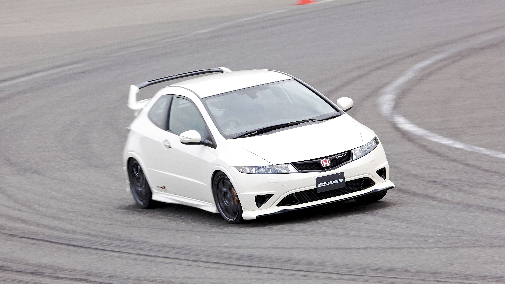
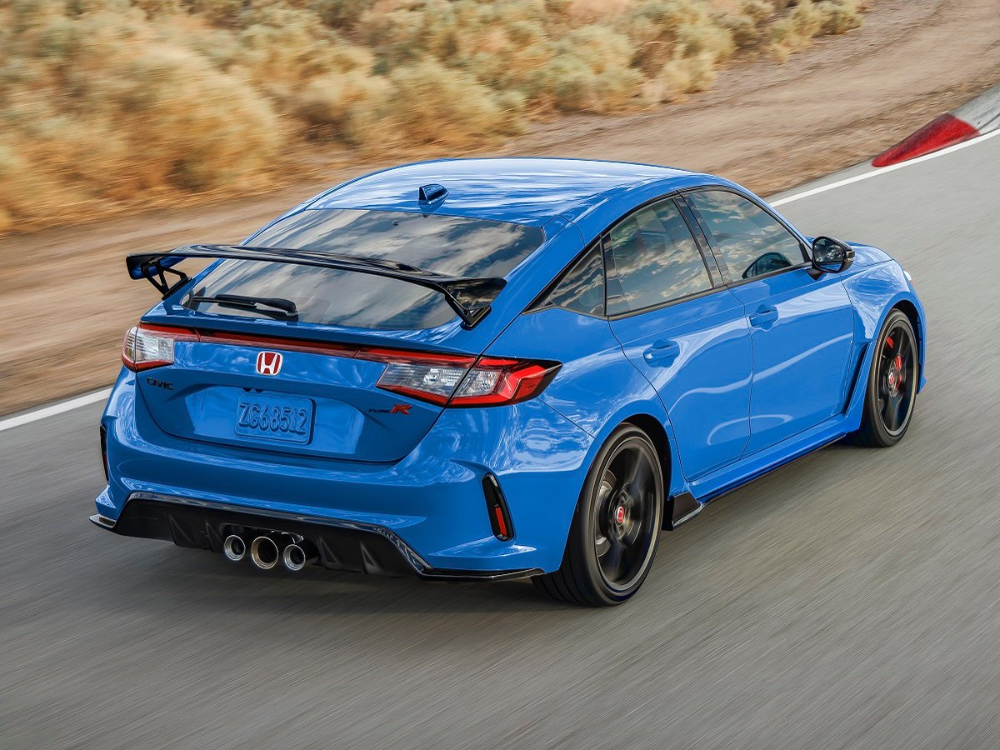

Concept of Honda Civic Type R
The Begining:EK9 (1997; based on sixth generation Civic)
The first Civic to receive the Type R badge was introduced on August 19, 1997, as the EK9.

Premier Edition

Special Editions
Mugen Type R concept
Introduced at the 2016 Tokyo Auto Salon, the Mugen Civic Type R is an aerodynamic package for the Civic Type R. The package includes an adjustable front lip spoiler, front canards, side skirts and a rear diffuser. The rear wing has been replaced with a GT style fixed rear wing. These elements are made from carbon fiber, a carbon fiber hood was also included as an option. There were no changes made to the drivetrain although a new exhaust system having a single exhaust pipe instead of the quad was fitted.
FK8 (2017; based on tenth generation Civic)
The Civic Type R went on sale in the United States and Canada on 14 June 2017, marking the first time the Civic Type R was officially available to these markets, slotting above the Civic Si sedan/coupe. Being based upon the FK8 generation of Civics which was designed as a global car, this made it easier to export the Type R to North America since that market already had the standard, UK-built Civic hatchback available for sale.
FL5 (2022; based on eleventh generation Civic)
The sixth-generation Civic Type R was introduced on July 20, 2022.[73] Designated under the model code FL5, it is presently built in Yorii, Saitama, Japan, where the regular Civic liftback for the Japanese market is also built.[71]
The FL5 Civic Type R is considered to be less aggressive in design compared to its predecessor with less prominent decorative vents and smaller air outlets.[74] It uses a smaller 19-inch wheel compared to the previous generation which had 20-inch wheels, although the contact patch is wider due to the usage of Michelin Pilot Sport 4S tires with 265/30-profile (previously 245/30). Equipped with widened fenders like its predecessor, the FL5 model in contrast gained widened rear doors and rear quarters instead of using a plastic add-on to achieve wider rear fenders.
In the interior, the model is equipped with semi-bucket seats, red carpeting and floor mats, and a specific interface for the instrument panel screen and infotainment screen which included the Honda LogR data logger to store data such as lap times.[75]
The 2.0-litre turbocharged petrol engine is carried over from the previous generation with incremental changes such as a revised turbocharger that features a more compact housing to improve the overall unit efficiency. The turbine itself has had both its blade count and shape optimized to boost power and improve airflow.
In March 2022, the pre-production model broke the Suzuka Circuit lap record for front-wheel-drive cars with a lap time of 2:23.120.

In Canada and the USA, the Civic Type R is only offered with 306 hp (228 kW) turbocharged 2.0 liter i-VTEC 4-cylinder engine. The Type R has amenities including a 12-speaker sound system with Sirius XM radio with a 7-inch touchscreen which allows gesture controls but no auxiliary input.[56] Minor changes were made in 2019. Honda added a volume knob and physical buttons. The climate controls also now have a hard button that adjusts the fan speed. The Type R receives larger cupholders, a revised switch for the electronic-parking brake, and more streamlined steering-wheel controls. A new color, Sonic Gray Pearl, was also added.[57] 2020 Type R had minor revisions to the brakes and front suspension.[58

